What You Should Know - Vectr: Fraction Infographic
 Important Vocabulary
Important Vocabulary
- Infographic - a representation of information that makes it easier to understand by using pictures and few words
- Denominator - the bottom number in a fraction and it represents the total number of parts that make up the whole
- Numerator - the top number in a fraction and it represents the number of parts out of the whole number (denominator)
- Whole - all of something
- Fraction - Part(s) of a whole
- Equivalent - equivalent fractions are the same or equal value but may look different
- Compare - to determine if a fraction is smaller or larger than another fraction
Infographic
An infographic is a way to represent information and data to help educate people on a topic. The point of infographics is to make information quick and easy to understand. They typically have a lot of pictures, or visuals, such as graphs and diagrams and contain little text to make it easier for people to quickly learn about the topic the infographic is about. Infographics are usually digital or virtual to be displayed on websites, social media, or other digital platforms.
| 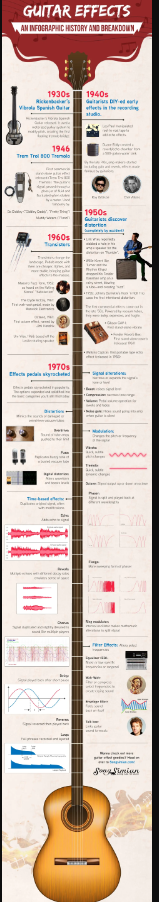 | 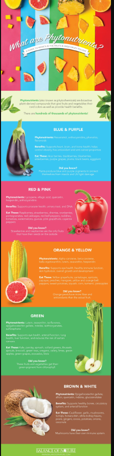 |
Fractions
Fractions are used to show how many equal parts there are of a whole. When you write a fraction, you put one number above another number with a line in between. The top number is called the numerator and it lets you know how many of the equal parts you have. The bottom number is called the denominator and it lets you know how many equal parts there are total. The line in between is called the fraction bar and just separates the numerator and the denominator.
| 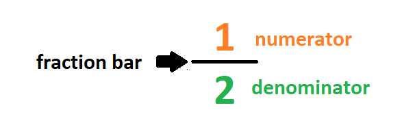 | 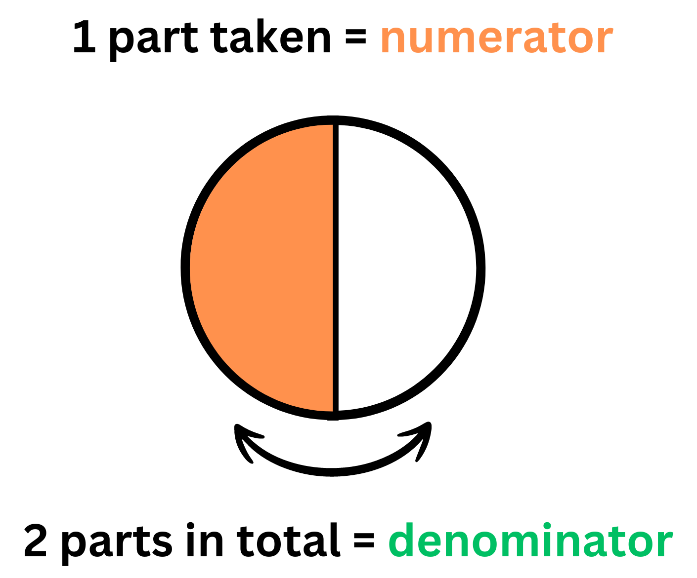 |
For example, if you take an entire pie and you cut it into 8 equal pieces, or parts, you are making a fraction. If you take 1 of the 8 pieces you have one-eighth of the pie. If you take 2 of the 8 pieces then you have two-eighths of the pie. If you take 3 pieces, you have three-eighths and so on.
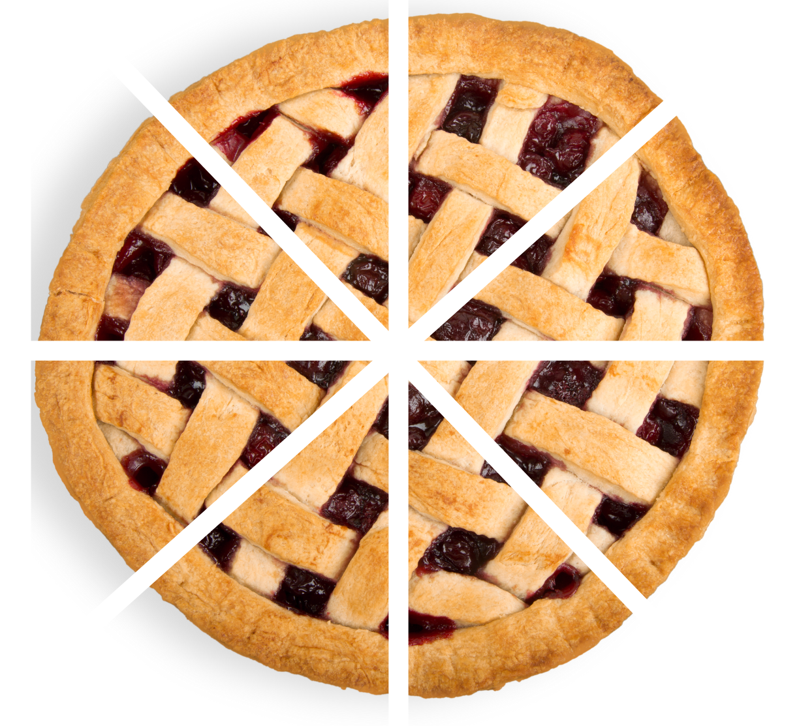
Remember, fractions must represent equal parts of a whole. If the parts are not equal then they can not represent fractions. For example, the following pie is cut into unequal pieces. If you take one piece of the pie, you would still have one piece, but you would not have one-eighth of the pie.
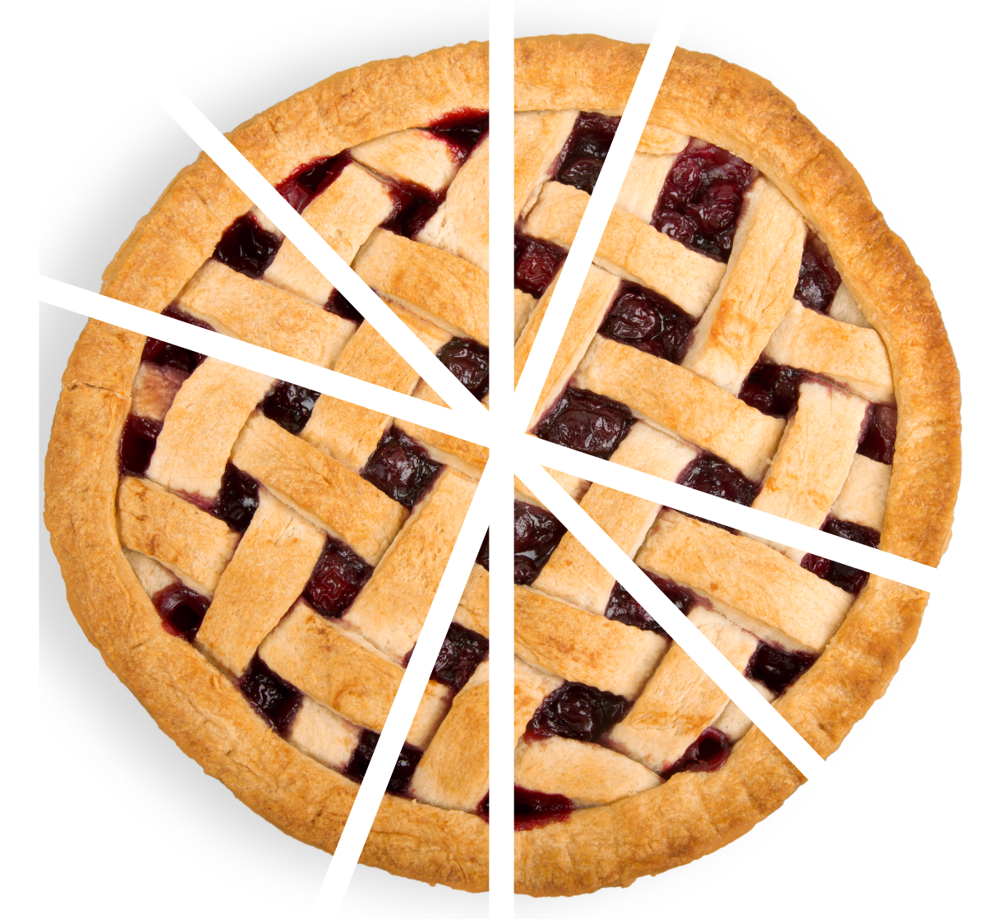
How Can Fractions be Represented Visually?
Fractions are typically represented as numbers with a numerator, denominator, and fraction bar. However, sometimes it is easier to understand or compare fractions if you draw them using a picture. Remember, fractions represent equal parts of a whole, so it is important to draw the parts the same. When drawing fractions, it is usually easiest to do it by using a rectangle or circle.
To draw a fraction follow these steps:
- Look at your fraction:
-
Draw your shape.
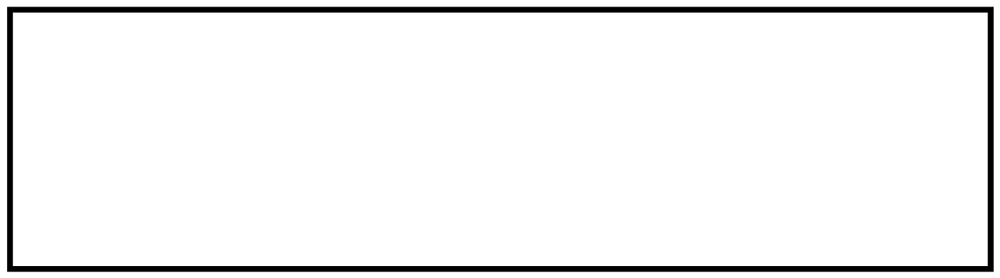
-
Partition, or divide, the shape into the correct number of equal parts (the denominator).
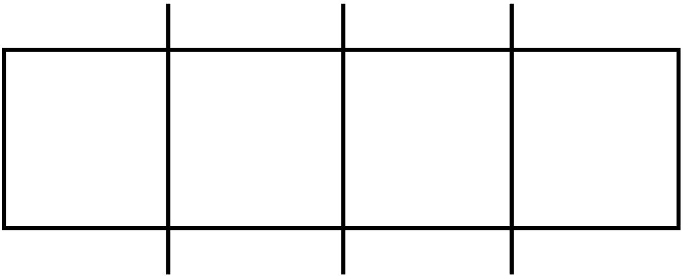
-
Color in the amount of equal parts that you have (the numerator).
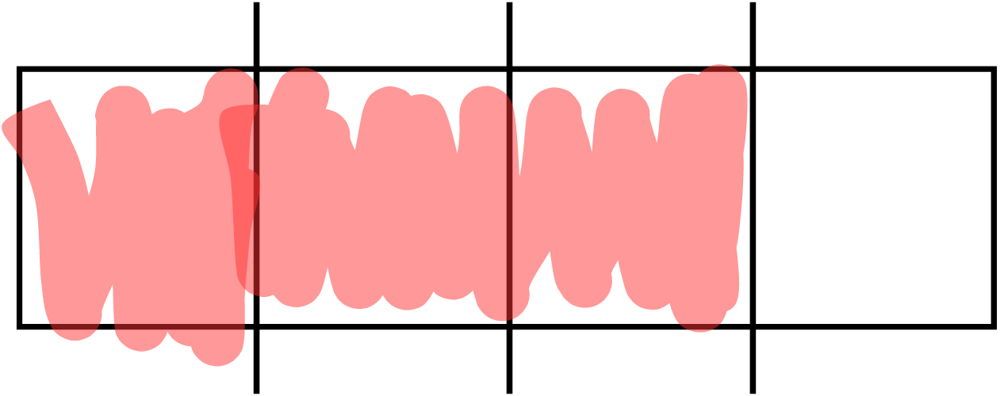
The rectangle represents the whole. We then divided it into 4 total equal parts to represent the denominator and then colored in the 3 equal parts to show how many we have, the numerator. It is just like the pie example above.
How Can Fractions be Compared?
When you compare fractions you are trying to see which fraction is larger or if they are equivalent, or equal. There are several ways that you can compare fractions, but the easiest is usually by drawing pictures (like we learned about above) and comparing them. For example, say you have the two fractions: and . You would follow these steps to compare them using pictures:
- Look at your fractions: and
-
Draw 2 shapes that are the same size.
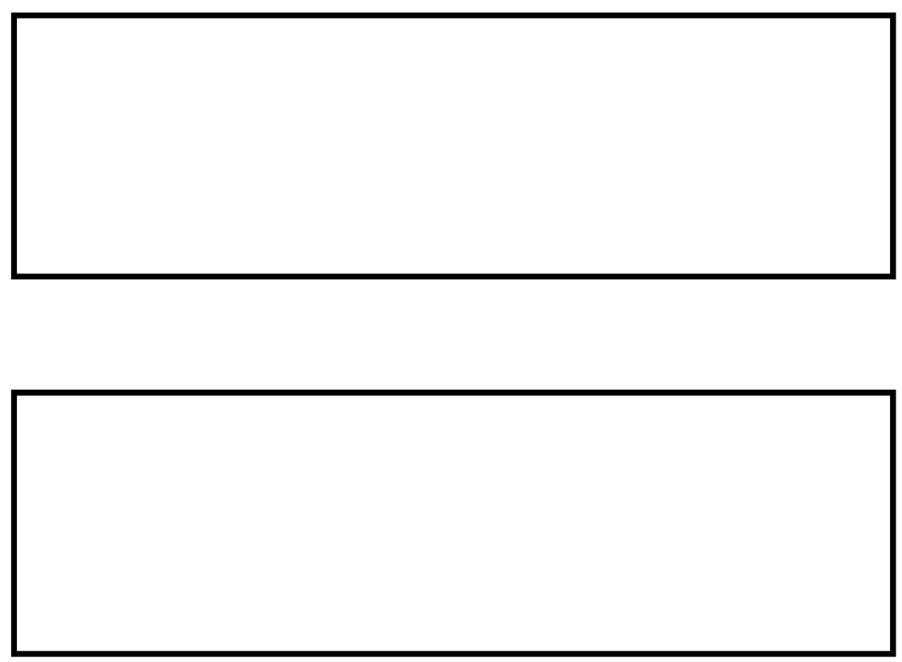
-
Partition, or divide, the two rectangles into the correct number of equal parts (the denominator). Remember, the fractions have different denominators so they will have different number of parts.
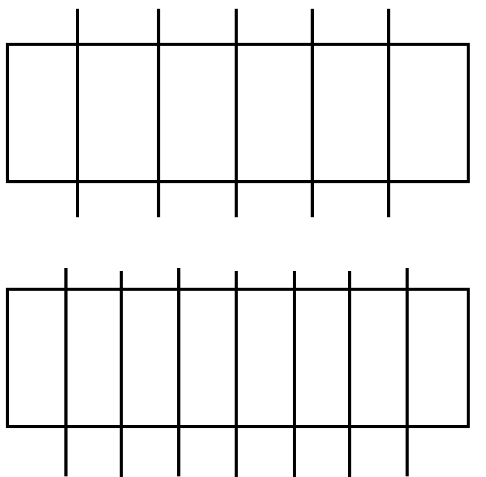
-
Color in the amount of equal parts that you have for each fraction (the numerator). Once again, the fractions are different, so you will have different amounts colored in for each one.
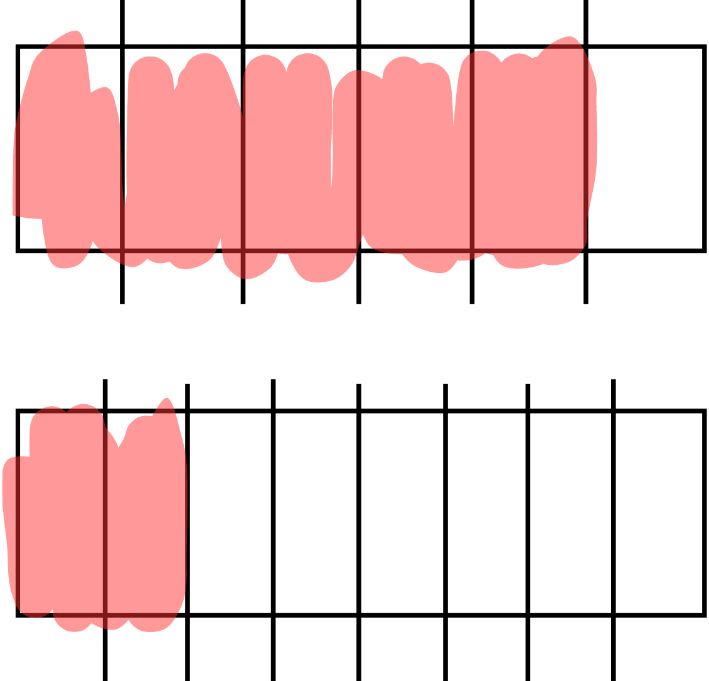
-
Look at your pictures. The picture that has more colored in is the larger fraction. The one with less colored in is the smaller fraction. If the pictures have the same amount colored in, they are equivalent, or equal.
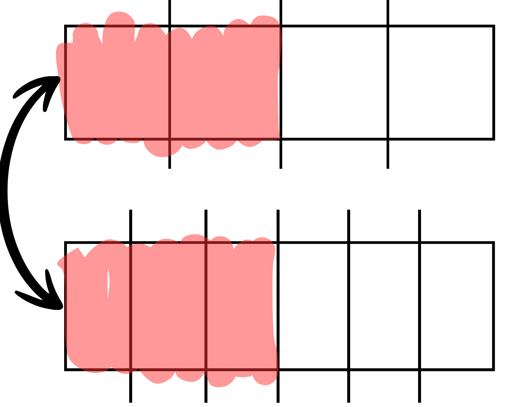
In this example, the first rectangle has more colored in, so you know that is larger than .
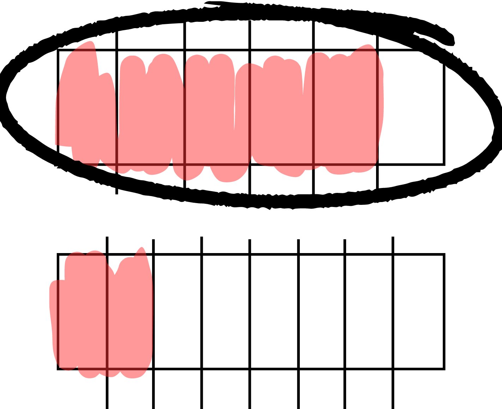
Career Connection and Real-World Application
Web Content Developer
A web Content Developer is a person that creates original content to be published on websites. This content can include graphics, advertisements, videos, pictures or any other content that is available to be seen through the web. They are in charge of collecting, organizing, writing, and gathering data and information to put on webpages. Their job is to make sure what is being put on the page is interesting, exciting, and/or attractive to users.

Nurse
Nurses work in hospitals, doctor offices and other health care facilities to help take care of patients. One important job that nurses have is to give their patients medication that they need. It is very important that they give their patients the correct amount because giving too little or too much can be very dangerous for the patients. Nurses can ensure they are giving their patient the correct dosage by using fractions, decimals, and other ratios.
Infographic Designer
Infographic designers work to create different types of infographics to make information easier to understand for people. They make infographics for schools, doctor offices, lawyer, etc. They will take information that is given to them and create sketches, a layout, and different visuals to make a template to help them plan what the finished infographic will look like. They will then use a computer design software to make the infographic come to life.